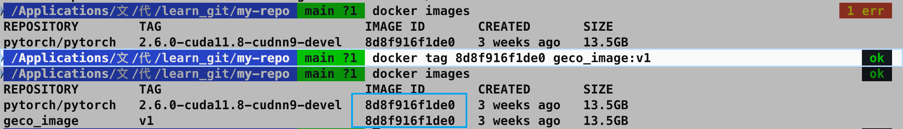
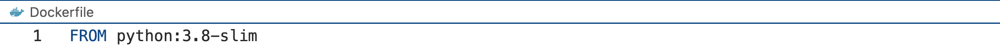
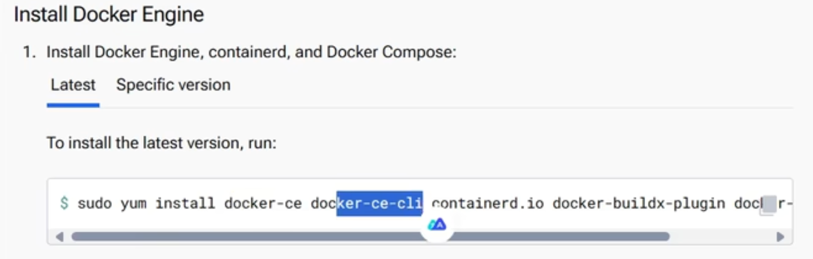
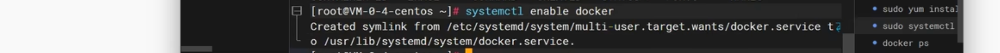
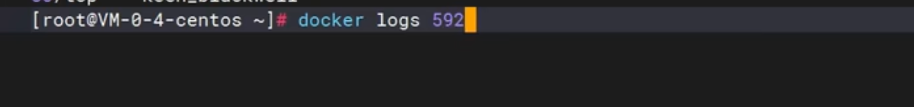
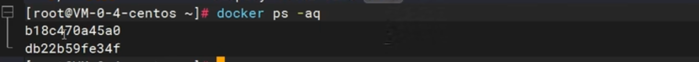
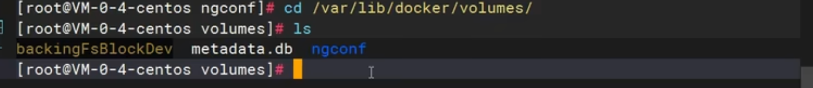

Docker¶
占位：docker hub

使用容器跑代码¶
1️⃣ 创建一个本地Ubuntu系统和docker容器共享的文件夹
1 | |
2️⃣ 将代码文件复制到Ubuntu系统的/loacal_data目录下，这样该目录就和容器内部的/container_data目录连通了
1 | |
3️⃣ 查看此时正在运行的容器
1 | |
该容器就是我们刚刚所创建的用于本地测试代码的容器
4️⃣ 用docker attach进入容器
1 | |
5️⃣ 之后的步骤就是与在本地系统命令行的操作一样，进入代码的文件夹，用python命令执行代码
本地拉取镜像上传服务器¶
🟢 第一步：拉取远程镜像，docker pull
1 | |


🟢 第二步，标记镜像，为 pull 下来的镜像，打标签，推送到==服务器上的名称:版本号==
1 | |

🟢 第三步：将本地的 docker 镜像保存为 tar 文件，就用刚刚 tag 的别名:标签，这样到服务商就是对应的名称和标签
1 | |

🟢 第四步：传输镜像，将保存的tar文件传输到远程服务上，FileZilla 即可

🟢 第五步：在远程服务上加载镜像
1 | |

- 在服务器端启动 docker
docker run -it #####image_id#####

docker run -it 镜像，run起来就是容器（或者叫应用），是可以修改的。
docker 配置加速阿里云镜像源¶


一些命令¶
-
docker images
-
查看已经有的 docker
-
docker pull ###
-
docker pull asappinc/python-38-cuda118
-
拉取远程 docker
-
删除本地拉取过来的 docker：
-
docker 安装成功没 docker help
docker tag¶
1 | |
tag的作用：
SOURCE_IMAGE[:TAG]：源镜像的名称和可选的标签。如果未指定标签，默认为latest。TARGET_IMAGE[:TAG]：目标镜像的名称和可选的标签。- 假设你有一个名为
my-image的镜像，并且你想为它创建一个新的标签v1.0，可以使用以下命令：docker tag my-image my-image:v1.0- 这将为
my-image镜像创建一个新的标签v1.0。你可以使用docker images命令查看镜像和标签：docker images- 输出示例：
REPOSITORY TAG IMAGE ID CREATED SIZE my-image latest d1e3f1e4f1e4 2 days ago 500MB my-image v1.0 d1e3f1e4f1e4 2 days ago 500MB
- 值得注意的是：
两个镜像的 ID 一样是因为它们实际上是同一个镜像，只是被打上了不同的标签。这意味着你可以通过任意一个标签来引用这个镜像，并且删除其中一个标签不会影响镜像的实际数据。
当你删除一个镜像标签时，实际上只是删除了这个标签，而镜像本身仍然存在，直到所有引用它的标签都被删除。
docker load¶
docker load -i 镜像tar文件名称.tar
-
加载完成后，使用
docker images即可查看 加载到的镜像 -
该命令用于从一个 tar 文件中加载 Docker 镜像：
1 | |
docker load：这是 Docker 的一个命令，用于从一个 tar 文件中加载镜像。-i：这是--input的缩写，指定输入文件。镜像tar文件名称.tar：这是包含 Docker 镜像的 tar 文件的名称。

dockerfile¶

查看官方源，以python为例

系统学习docker¶
安装docker¶
- docker的安装命令：参照docker官网访问docker.com
- 点击：开发者-->文档-->manuals手册(包含how to install、如何安装)-->docker引擎 docker engine --> install安装-->选择我们系统的版本（如 CentOS）--> 参照步骤， 直接复制命令
- 第一步，移除系统里边的旧版本


- 第二步：配置docker的下载源
安装 yum-utils 工具类，用这个工具类配置docker的下载地址源 因为这里的docker下载地址是连接docker官网的，下载起来比较慢
参照如下：

把docker的下载源配置成阿里云的地址
- 第三步，安装docker引擎：

包含
（1）docker-ce：docker引擎
（2）docker-ce-cli：docker引擎的命令行程序，命令行可以给docker的demon后台进程去发送命令
（3）container.io：docker的运行时容器环境
（4）以及docker用来构建镜像的插件工具
（5）还有docker compose：做批量

输入Y确认下载安装
- 第四步：启动docker

输入system control start docker sudo 表示 使用超级管理员权限，使用的是root的话，可以直接粘贴命令回车，完成 docker启动

运行docker命令，docker ps，查看正在运行中的应用
注意：这个命令启动docker只是当前启动，如果关机，下次还得用这个命令启动docker， 所以额外加一个叫system control enable docker

让docker开机也启动，至此docker安装完成
补充配置：

docker已经启动安装完成以后，可以配置docker的加速
因为docker去下载镜像， 默认从docker hub官网下载，而连接国外比较慢，所以一般配置国内镜像源地址
命令行示例如下：

配置好加速源地址以后，重启docker的后台进程以及重启docker
注意这里的配置原理，是docker后台进程的配置文件，在etc/docker/demon.json中，给这个json中配置了一个选项：registry - mirrors指向国内镜像源，相当于修改了docker的配置文件
全部配置成功以后再次验证，如果docker ps 等 docker 命令可以运行证明没有问题
docker 命令¶

问题描述：

用docker启动一个nginx应用，并且将nginx的默认首页改成自己的页面，这样别人来访问这个nginx，就能看到你自己的页面，并且将改好的应用发布出去，发布到应用市场，让所有人都能从市场里边下载这个应用，直接运行
步骤如下：

- 第一步去应用市场下载NGINX软件镜像
- 然后docker使用这个镜像启动一个应用容器
- 接下来修改容器里的默认页面，把它改成自己的页面
- 最后把修改的整个软件，保存一个新的镜像，把这个镜像发布到应用市场里边，让别人可以下载
第一步，下载镜像：

跟镜像相关的命令 - 检索，使用docker search先找一下有没有这个镜像 - 再利用docker pull把这个镜像下载过来 - 使用docker images，查看已经下载来的所有镜像列表 - 使用docker rmi，remove image的缩写，删除某一个镜像
🟢 先来用docker search来搜一下有没有nginx镜像

- 打印一个列表
- name：镜像的名字
- description：对这个镜像的描述
- stars：这个镜像有多少的star
- official：这个镜像是不是官方发布的镜像，如果OK代表这是官方镜像，否则就是第三方制作的镜像

-
显示 有一个NGINX，直接进行下载
-
使用docker pull命令直接写镜像名回车，镜像进入下载流程，下载完成以后，使用docker images检查一下

- 显示 系统里现在有一个镜像
- 打印的列表：
1️⃣ repository：代表镜像的名字
2️⃣ TAG 是镜像的标签，一般代表镜像的版本，latest代表最新版本
3️⃣ image id代表镜像的唯一id
4️⃣ created ：镜像是多少天前创建出来的
5️⃣ size： 镜像的大小
📢 这里演示下载的镜像NGINX，是最新版的， 那如果要下载指定版本的呢？
-
镜像的完整名，其实是镜像名冒号加标签
-
所以docker pull 下载nginx，其实等于docker put nginx加上它的标签，也就是版本latest，下载最新版本
-
如果要下载指定版本，那此时就不推荐docker search搜索镜像，而是去docker hub网站自己来搜索镜像，在这个网站里有完整的版本列表，看上哪个去下载哪个

搜索想要的镜像，输入NGINX回车，有NGINX镜像 注意加了这两个标志的都是官方镜像
点进来，每一个镜像都有说明，包括这个镜像如何启动，也提供了docker run命令

参考每一个镜像的说明，如果想要下载其他版本的nginx，点击 TAGS 里

- 每一个tag都是一种版本，比如1.26
下载它，直接复制命令到我们的命令行，重新下载docker pull，冒号指定了镜像版本

下载完以后，使用docker images，完整写法是image ls，列出所有的镜像列表

看到有nginx1.26.0镜像 ，还有nginx lastest 镜像 🟢 如果想要删除某一个镜像，可以使用docker rmi，就是remove image，写镜像的名加上完整标签

-
比如要删latest，就写latest
docker rmi nginx：latest -
或者，每一个镜像有它的唯一id也可以用它的唯一id ，来进行删除
- 镜像就被删除了
- 再来检查docker images，列表里边只有NGINX1.2.6.0

启动容器¶
第一步，下载nginx镜像 第二步，启动容器，每一个容器都代表一个运行中的应用
🟢 跟容器相关的命令
-
运行使用docker run
-
查看正在运行的容器 docker ps
-
停止stop
-
启动start
-
重启restart
-
查看容器的状态，比如CPU内存占用，使用docker states
-
查看容器的日志，也就是应用运行过程中产生的日志，使用docker logs
-
进入容器内部进行修改，使用docker exec
-
删除一个容器，使用docker rm
📢 其中docker run和docker exec 这两个命令，比较复杂
首先第一个docker run
当已经有了一个nginx镜像以后，想要启动这个应用
第一步是docker run，启动一个应用

- docker run --help 查看这个命令怎么用
用法usage是docker run options，options就是参数项
启动一个容器能加的参数项：

-
image代表镜像
-
中括号代表 可选参数
- 后边[command] [ARG...] 翻译过来是 ：命令和参数。表示如果启动这个镜像，要使用什么样的启动命令，可以自己定义，但一般镜像后边的命令和参数，不用写，因为每一个镜像有它自己的启动命令和参数，这是镜像里边默认带好的，除非我们要改变镜像的默认启动行为，否则都不用管
- 使用就是：
1️⃣ 直接使用docker run加上 镜像名，就可以用这个镜像启动一个应用
2️⃣ 如果要加入一些参数设置，那就给run和image中间加上参数设置项
现在直接使用docker run nginx
但如果不写镜像的版本号，就会使用最新镜像，如果第一次启动没有这个镜像，会自动下载，启动阻塞了控制台，此时不可以退出控制台，一停，应用跟着也就停了

复制一个视图，在这个会话中用第二个命令：docker ps，可以查看运行中的应用
看到有一个nginx在运行
完整打印参数解释：
- container id 代表正在运行的应用的唯一id
- image 使用哪个镜像运行的，没带tag标签，说明是使用最新镜像
- command 代表这个容器自己的启动命令，不用管
- create代表 是多长时间之前启动的
- status 启动状态，up 代表上线成功了
-
ports 代表这个应用占用的端口是 80 端口
-
names代表应用容器的名字，会给一个随机名字
▶️ 此时把这个应用控制台 CTRL C 中断掉，会发现这个应用停了
- 再使用docker ps 来检查，就没有运行中的这个应用了

注意docker ps 查看所有运行中的容器
- 停了的，可以使用
docker ps -a就可以查看所有的容器，包括停止了的

可以看到这个容器之前是运行的，现在status状态是exist已经退出了
▶️ 退出的容器如果再想启动怎么做呢？
-
使用 docker start，相当于把这个容器重新启动
-
docker start 写容器的名字、容器的id、id也可以只写三位，能跟其他人区分就行

以上，代表把它启动起来了
docker ps 查看，这个应用up，表示启动起来了
▶️ 启动的应用如果想停掉，可以使用docker stop命令，把这个应用停掉，可以使用它的应用名

docker ps查看运行中的应用就没有了
想要看到它就ps -a
看到七秒前退出
▶️ docker restart
无论这个容器是运行中还是停止了，都可以使用restart重启一下

docker ps ，看一下，又重新up上线了
▶️ docker states
查看这个应用CPU内存等占用情况

打印592容器，CPU内存包括网络IO整个情况，而且是每秒变化的，这一块没有变化的原因是因为这个容器现在没有处理任何请求，所以整个资源的占用没有变化
▶️ docker logs 592

容器在运行过程中会产生大量日志，有时要用日志排错等
就可以使用docker logs查看容器日志

🟢 删除容器
run 起来的镜像 叫做 容器。想要删除一个容器，必须先stop停了，才能删除；也可以使用false remove强制删除
🟢 强制删除的写法：

这样运行中的容器也能删除
🟢检查：docker ps；docker ps -a

都没有
docker run 后台启动¶
问题描述：直接使用
docker run image会将控制台阻死，并且不能访问端口，想要后台启动，并且设置可以访问的端口
🟢 docker rm -f container_id/name 强制删除启动的容器（run 起来的 image）
🟢docker rmi image:tag 删除镜像
🟢 最简单的 docker run image（默认启动最新的 image，docker ps 查看该镜像的容器 id）
🟢docker run -d（后台启动） --name my_image_container(给启动的镜像起一个容器名，如果不给名字，会起一个随机名字) image
（1）这样启动以后，容器状态是 UP，并且名字是指定的名字
（2）并且启动是后台启动，返回的是容器的完整 id
问题描述：此时依然不能访问端口
原因分析：
原因在于启动的这个容器，是运行在自己的环境内
具体解释：
当docker run启动一个容器，首先是本地的主机安装了docker，每一个容器其实在自己的环境内运行，是隔离的；每一个容器它都拥有自己完整的文件系统、名称空间、CPU内存进程等这些操作；如果docker run启动了一个nginx，其实nginx就安装到了这个容器中，也就是小型LINUX系统里边跑的一个软件，而这个nginx占用的是80端口，也就是如果你想要访问nginx，除非是来到这个小LINUX系统里边，访问小系统的80 端口，就可以访问到nginx
但是现在想要访问的是外部主机的一个端口，就去访问到nginx，比如想要访问外部主机的88 端口，最终访问到nginx，那么就可以来做一个操作叫端口映射
使用
-p这个参数写一个外部端口:内部端口就代表访问主机外部的88端口就等于访问容器内部的80端口，这个操作叫端口映射，p就是port的简写
🟢 端口映射
docker run -d 后台启动 --name 容器名 -p 本地 80 端口:容器内 80 端口 镜像名 nginx

此时，docker ps，查看容器状态

跟之前的打印有所区别：在PORTS端口这一块，0.0.0.0:80 代表任何IP访问80端口就是容器内部的80端口
此时，浏览器上重新刷新

nginx的默认页面就展示出来了。 03:19 所以非常重要的一个点 03:21 就是如果我们使用docker启动一个容器 03:24 想要让外边随时能访问 03:26 一定要为这个容器暴露端口 03:29 也就是来做端口映射
问题描述：
本机 88 端口映射到容器 80 端口，两个端口，本机 88 端口可以重复吗？容器 80 端口可以重复吗？复述问题：如果启动一个新的容器，新的容器内部也用
80 端口，外部端口映射到88 端口可以吗？
🟢 答：本机 88 端口不可以重复，容器内部80端口可以重复，也就是同一个镜像，启动的容器 A 可以是 80 端口，容器 B 也可以是 80 端口
理由： 因为88 端口是占到我们自己主机上的同一台机器，同一个端口只能开一个 而80 端口可以重复的，因为这个80是容器的80 端口，容器 A 可以是
80 端口，容器 B 也可以是80 端口，因为 容器之间是隔离的，只是在做端口映射的时候，注意防止冲突即可。每一个容器都可以认为是一个独立的LINUX服务器。
修改容器¶
问题描述：
默认是nginx欢迎页，想要把它改成自己的欢迎页面。怎么修改呢？

🟢 需要用到的命令：dockr exec 命令
使用dockr exec命令，进入到装了ngnix的这个容器里边，在这个容器里边有一个文件路径叫user/share/nginx/html，ngnix的默认页在这存着。
问题描述：怎么知道修改的文档在哪里？
怎么知道修改的文档在哪里？
阅读官方文档，docker hub，下载 ngnix 镜像的时候，镜像的介绍页 Overview，会说明 静态页面位置在哪。


回到我们的问题：如果我们想要修改ngnix默认页，因为ngnix是装到容器里边的，所以我们需要进入到这个容器里边的ngnix存页面的位置进行修改
具体步骤：
（1）打开终端，进入容器，使用docker exec -it mynginx /bin/bash
1 | |
it 表示以交互模式，相当于进行交互，进行命令的发送，以交互模式进入到哪里呢？就写容器名，容器名叫mynginx（或者写 id 也是可以的）
后边再加上，因为要进行交互，那么使用哪种方式进行交互？使用控制台交互，所以后面接 /bin/bash

🟢（2）观察区别。原来是 root@VM...... 变成 root@2d83bd.... 表示现在已经进行到了 ngnix 容器内部
1 | |
ls / 列出目录结构

控制台输出也是一个 LINUX系统的目录结构，也就是说容器有自己的文件系统，带了nginx完整的运行环境
而nginx页面的位置在usr/share/nginx/html/ ，进入该文件

ls 可以看到有一个index页面，可以修改
vi index.html 回车
容器为了保持轻量级，内部的这个LINUX系统没有 vi 命令，如果想要修改页面使用 echo 方式。如图所示即可。
再次来访问，刷新浏览器，展示新的页面

问题描述：每次想要修改容器内部的东西，还要使用docker exec进入到内部再进行修改，有点麻烦，比较简单的方式？
🟢 使用docker 的存储把内部的一个文件夹，直接映射到外部主机的一个位置以后， 在主机位置改，内部也会发生变化（具体方式，蹲一个）
（3）修改完成以后，exit 退出容器，重新回到本地机器的主控制界面

以上整个过程实现了，本地主机访问 80 端口可以访问到已经修改好的页面。
保存镜像¶
🔴 问题描述 ：把制作好的这个软件，能默认首页返回hello docker的软件，发布到应用市场，让别人下载这个软件，默认访问也能展示hello docker
第四步，保存镜像。
之前启动了容器内部的页面，也修改了，现在希望把这个运行中的软件，打包成一个镜像保存起来，最终可以分享到社区
需要用到的命令如下：

- 提交：docker commit
- 保存：docker save
- 加载：docker load
docker commit¶
查看 docker commit 的功能：
1 | |
查看文档描述：

docker commit可以创建一个new image新镜像，从一个容器的改变里边。
也就是利用commit命令，可以把整个容器以及它的所有变化，打包成一个新的镜像
参数说明：
-
-a指定作者 -
-c有哪些改变的列表 -
-m此次提交了的信息 -
-p打包期间加上-p可以暂停容器的运行
用法：
1 | |
docker commit + 那一堆可选参数 + 容器 + 镜像 : 标签
演示：
1 | |

运行成功，检查docker images，所有镜像列表
docker save¶
打包文件
1 | |
查看帮助文档 & 命令功能：

具体使用实例：
docker save，加上镜像，先来写docker save，要保存的镜像是myngnix，标签 v1.0
镜像中间可以加一些参数，即 save跟image中间加 options
option里边可以指定 -o 就是将这个镜像输出成一个 .tar 压缩文件，这个压缩包文件，可以随便起名，这里也叫 myngnix.tar

这个包，可以放到U盘传输给别人，别人就能使用了
🔴 问题描述：别人怎么使用？
docker load¶
补充 同时删除多个镜像命令：
1 | |
删除容器：
1 | |
🔵 场景描述：别人拷贝了 mynginx.tar ，那么对方怎么启动一模一样的应用呢？（如何把从别人那里拷贝来的镜像，运行出一样的容器（应用）？）
安装 docker 的机器上，根目录只有 mynginx.tar

此时使用，docker load，具体怎么使用，先查帮助文档

参数解读：
-i指定压缩包位置，会自动将压缩包读取进来

docker images 检查

🟢 有了镜像（only read）以后，使用docker run命令启动容器（实例化的镜像），
docker run myngnix:v1.0 (镜像名:版本号)
中间加可读参数：
-d 后台启动；--name 容器名称；-p 80:80 端口映射
返回完整的容器名。
docker ps 查看正在运行的容器；刷新浏览器，访问本地 80 端口，就是改过的页面，运行了一模一样的应用。

总结：
- docker commit：容器提交为镜像
- docker save：镜像打包成可移植的 tar 文件
- docker load：加载镜像文件
- docker run：启动镜像，实例化镜像，启动应用，实例化成一个容器
- [TODO] 还得补，怎么本地修改和镜像修改...
🔵 场景描述：把镜像保存成一个文件的方式，方便利用文件传输的手段进行传输，另外一种方式，把镜像推送给社区，直接使用docker pull 进行下载
docker push¶
分享社区
最后一步，分享社区，把镜像 mynginx:v1.0 分享到官方的docker hub 仓库
需要用到的 3 个命令：
- docker login：首先登录到 docker hub
- docker tag：docker hub 要求给镜像重新起一个名字
- docker push：最后将镜像推送上去
🟢 docker login
- 查看用户名

🟢 docker login，按照提示 输入用户名和密码
如果想要推送到网页端，在网页端登录以后，客户端（也就是终端）也需要登录，直接输入 docker login，按照提示输入 用户名和密码即可。

🟢 登录成功以后，想要推送 mynginx 镜像，接下来，使用 docker tag 对这个镜像进行改名
理由：因为docker hub为了区分这些镜像，每一个镜像的名字都是它的用户名后边再加镜像，相当于我们本地的这个镜像缺少了用户名
具体的 docker tag 怎么处理？
1 | |
Usage 显示，docker tag 你原来的镜像和target新的目标镜像
🟢
1 | |

执行完改名操作以后，docker images 检查

拥有了一个新镜像 leifengyang/mynginx:v1.0 ，虽然镜像名跟标签跟上一个不一样
但是都是同一个镜像，所以镜像id是一样的，有了这个新镜像以后，使用docker push把它推送上去
🟢 docker push
📢 需要注意的是 此时的推送不能使用 image ID，因为这两个镜像id都一样，没法区分，直接写镜像加标签回车，进行镜像推送，连向的是docker hub，会比较慢一点
1 | |

整个推送完以后，这一块出现打印，来到个人主页，刷新 Repositories，就是个人的镜像仓库，而且是一个public镜像，所有人都可以访问。
点进这个镜像，也能看到这个镜像，推了一个标签叫v1.0
可以为这个镜像去来编写一个说明书

点击 Add overview ，支持markdown语法
镜像特性：修改了NGINX默认页，返回hello docker
启动命令：来告诉别人怎么用这个镜像
docker run -d 以后台方式启动 -p端口 暴露外部的80访问容器的80 --name mynginx
然后使用这个镜像，全称+标签 leifengyang/mynginx:v1.0
点击更新，就为这个镜像写了一个说明书
有了这个说明书以后呢，别人去docker hub去来搜你的这个镜像，然后根据描述启动镜像。

📢 推荐将镜像分享到社区时，除了上传指定版本的，还上传一个最新版本的，方便直接 docker pull
🟢 具体的操作，使用 docker tag 改名即可
1 | |
🟢 docker images检查，发现有了 leifengyang/mynginx:latest 的最新镜像，这个 3 个镜像的 id 都是一样
🟢 使用 docker push 推送最新镜像，这样别人拉取镜像即使不写版本号也不会报错。
1 | |

整个推送完成，刷新自己的仓库，有最新发布的版本还有指定的版本
总结 docker 的常用命令¶
尤其是 docker run 运行一个容器

补充端口映射¶
🔵 情况描述：现在已经有了一个运行中的 docker 容器，占用的 80 端口，现在在启动一个 docker 容器，镜像仍然是 mynginx:v1.0，这次占用外部主机的 88 端口，相当于容器内部的 80 端口
需要注意的是，docker run -d 后台启动，-p 端口映射本地 88 端口到容器内 80 端口，--name app02此时 容器名绝对不可以跟之前的容器名重复，启动的镜像还是 mynginx:v1.0
🟢 启动一个容器，-d 后台启动，-p 本地 88 端口映射容器内部 80 端口，名字叫做 app02，从镜像 mynginx 中启动，标签名为 v1.0
1 | |

docker 存储¶

🔴 问题描述：
（1）如果想要修改nginx的默认页面，需要知道在容器内部/usr/share/nginx/html这个位置下存了 nginx 的默认页，想要修改这个页面，需要使用docker exec，进入到容器内部进行修改
（2）因为容器有自己的文件系统运行在自己的进程内，那数据自然也存到自己的容器内部，某一天假如这个容器炸了或者误删除，再重新启动一个，就相当于启动了一个新容器，原来容器里边的数据也会丢失
以上描述了两种情况 ① 修改不容易 ② 容易丢失

📢 补充批量删除的所有容器的技巧
- 删除一个容器：
docker rm containerID - 🟢 第一步 ：拿到所有容器 ID
1 | |

docker ps -a拿到所有容器
docker ps --help
-a 显示所有容器
-q 显示所有容器 ID

- 🟢 第二步，批量删除所有容器
-f表示强制删除
1 | |

现在演示在不挂在目录的情况下怎么修改默认页面
🟢 第一步启动容器，如果没有镜像，那么 docker 会自动下载最新的镜像并启动容器：
1 | |
🟢 第二步，查看正在运行的容器
1 | |
🟢 第三步，终端进入容器内部 -it 以交互模式启动 bash 终端
1 | |
🟢 第四步，进入到想要修改的容器内部的文件，阅读官方镜像文档，找到目标目录
1 | |
🟢 第五步，打印该目录下的文件
1 | |
🟢 第六步，修改目标文件，刷新页面，完成修改
1 | |

这样修改的步骤已经很繁琐了，而且如果想要编辑一个文件，docker 内部都不支持编辑命令

🔴以上情况都说明了容器内部的所有数据管理起来是非常不容易的
演示另一种情况，不小心误删除容器，如果以相同的命令再次启动容器，此时容器变成了一个新的容器，刚刚的修改也不作数了
具体操作：
🟢 第一步 删除容器
1 | |
🟢 第二步，以相同的命令重新启动一个容器
1 | |
此时，刷新页面，又变回了默认页面

说明：容器只要一启动，相当于启动一个自己的空间、文件系统和进程。容器一旦销毁它的所有的文件、系统内容全部销毁，这样就产生了数据丢失问题
总之目录挂载可以解决的两个问题
① 容器内部的文件修改不容易
② 数据丢失问题
目录挂载¶

什么是目录挂载？
（1）docker允许在自己的机器中专门开辟一个目录，比如上图中演示的
/app/nghtml，然后告诉docker，这个目录对应容器内部的目录/usr/share/nginx/html（2）本地目录和容器的目录 相当于形成了关联关系
（3）在外部的目录进行所有的内容修改，内部也看得见；内部发生了任何变化，外边也看得见，因为两个目录是一个挂载
类比现实，就是电脑上插个 U 盘，（容器内的）这个目录其实就是一个U盘，把U盘插入电脑，那么电脑上的某一个位置，就会显示U盘里边的内容，U盘里边改了，电脑里边看得见，电脑里边给U盘里边也可以写东西，电脑里边改了，U盘里边也改了
以上就是 挂载的理解
怎么使用挂载？
1 | |
依然是 docker run，加一个 -v 参数 本地目录:容器内目录
docker run -d后台启动，-p端口映射，本地 80 端口映射容器内 80 端口，-v 本地 /app/nghtml挂载到 /usr/share/nginx/html目录。如果名--name app01，启动的镜像 nginx
※ docker run

关于目录挂载的说明
1 | |

（1）目录挂载启动一个容器以后，docker ps 查看容器状态，启动成功没问题，staus是up的；
（2）而且外部一开始并没有创建这个目录，docker还会自动创建
（3）ls 访问LINUX主机的app下边有没有东西，确实有一个 nginx 目录
对于宿主机来说，它是新建的一个空目录， 此时再来访问这个nginx，来到浏览器刷新

显示，nginx 返回403拒绝访问，因为现在nginx的默认页，要==以外边的文件夹为准==
而我们宿主机文件夹没有默认页，所以内部也认为没有数据。
（4）此时如果想要访问内容，就在外部准备一个页面

现在在宿主机文件夹内新建一个 index.html，并且添加 2222
1 | |
在宿主机 nginx 里面放了一个 index.html，相当于在容器内部放了一个一样的，此时再刷新页面，看到默认页改变了。
好处：
修改数据会非常容易，不用担心数据丢失，如果 docker ps 误删除了容器，外部的这个文件夹还在，而如果启动的时候用相同的命令，依然访问 80 端口，内容一模一样。
🟢 误删除了容器
🟢 外部的文件夹还在
pwdprint working directory 打印当前正在工作的目录
1pwd
🟢 启动的时候用相同的命令，还是让外部的这个
/app/nghtml文件夹挂载到内部/usr/share/nginx/html
1docker run -d -p 80:80 -v /app/nghtml:/usr/share/nginx/html --name app01 nginx
此时，启动的nginx容器内部的内容就会跟外边保持一致，回车，启动的新容器docker ps 依然访问80端口，刷新内容一模一样
如果进到容器内部，在内部进行文件修改，外部也是看得见的
演示过程：
🟢 进入到
9d1bash控制台
1docker exec -it 9d1 bash🟢 cd到 内部目录
1cd /usr/share/nginx/html🟢 ls 查看目录中的文件列表
1ls🟢 查看文件内容
1cat index.html🟢 追加 3333 到 index.html
1echo 333333 >> index.html🟢 查看 index.html 中的更改是否有效
1cat index.html🟢 退出 容器，控制台输入
exit🟢 docker ps 查看该容器正在运行，但是我们把容器内容改了，现在看容器外部的内容是不是和容器内部的保持一致
现在看容器外部的内容是不是和容器内部的保持一致
具体操作为
🟢 打印当前工作目录
pwd🟢 查看目录中的文件
ls🟢 查看文件中的内容
cat index.html内容和容器内的文件保持一致，外部的目录挂载到容器内部的一个位置


总结，目录挂载，使用 -v 的方式，将外部的文件挂载到容器内的文件
目录挂载&卷映射¶
目录挂载会把 容器内相应的文件清空，然后将宿主机or主机or 本机的文件，复制到容器内对应的位置，如果宿主机文件夹内部是空的，那么容器内也是空的
🔵 如果是容器启动的必要 config 配置文件挂载了，那么容器就会启动失败，因为目录挂载会清空 容器内目录，解决办法就是：
🟢 卷映射

卷映射¶
🔴 问题描述：
之前启动的nginx容器，想修改它的配置文件，它的配置文件在容器内部的位置叫etc/nginx/ 也就是 nginx.conf

具体来说，
（1）首先 docker exec -it 以交互模式启动容器 9d1的 bash 控制台
（2）在容器内部，进入 etc/nginx文件夹
（3）ls 看到文件 nginx.conf
🔴 也就是说在容器内部，有nginx的配置文件，如果想要修改这个配置文件，按照目录挂载的方式就是，在外部的位置 /app/ngconf 挂载内部目录 /etc/nginx，希望实现的效果是 ：在外部进行的修改，内部也发生变化
那这样做可不可以呢？
🟢 退出这个容器，重新启动，进行测试，同时挂载两个目录，写两个 -v
1 | |
后台启动，端口映射，之前 80 端口已经占用了，所以本机 88 端口映射容器内部 80 端口，先挂则页面目录 -v /app/nghtml:/usr/share/nginx/html ，再挂载配置文件目录 -v /app/ngconf:/etc/nginx ，名字叫 app02 ，启动的镜像是 nginx
🟢 docker ps 查看文件状态，发现运行中的容器并没有app02，docker ps -a查看所有容器，显示 app02 是退出状态：

那退出的原因是什么呢，检查 app02 的日志：
1 | |

最后一行显示，/etc/nginx/nginx.conf 没有这样的文件
解释：因为如果使用目录挂载的话，会默认先在容器外边创建一个空文件夹，叫做
ngconfig，而这个空文件夹里边什么都没有，那再来挂载到容器内部的/etc/nginx/下，相当于容器内部目录内什么都没有，但是容器启动，又要使用默认的/etc/nginx/下的配置文件，所以容器报错导致没有启动也就是挂载配置文件是不可以的，除非提前把配置文件放到本机挂载的目录下，因为默认以外边的挂载目录为准，而容器刚启动本机挂载目录是空目录，那容器内部就是空目录
🔴 有没有一种方式能让容器启动的时候，虽然在本机目录来挂载容器内部目录，但是容器内部目录有什么内容，能让本机挂载的目录跟容器内部目录的内容保持一致 ，外部目录初始化就有容器内部的内容？
解决方式 ： 卷映射
🔴 怎么使用卷映射？

卷映射的写法：-v
case1：如果是目录挂载，需要写主机要挂载的目录位置
case2：而如果是卷映射，写的是称为卷名 ，所谓的卷其实指的就是一个存储，按照卷形式的写法，只需要起一个卷名
卷名跟路径的区别，就是不以点杠（./）或者杠(/)这些路径开始，就是一个卷
这个卷docker会自动给卷创建一个存储位置，去把容器内部的这里面内容，即使在容器初始启动的时候就跟内部的这个内容保持完全一致
演示：
🟢 启动第三个容器：
1 | |

重新启动一个容器，还是用之前的命令，来稍加修改，容器名 app03，88 端口被 app02 占用了，所以这里端口映射本机端口写 99 ，还有 -v 的时候，直接叫 ngconf （叫做卷名）我启动一个app
docker ps 查看状态，app03 成功启动了。
这个 docker run 即使用了目录挂载，又使用了卷映射，
🔴 问题：如果想修改配置文件，那怎么在本机去找文件存储位置？
🟢 答：卷的位置 ，docker统一放在了这个目录下：
/var/lib/docker/volumes/<volume-nanme>

实操：
（1）进入本机 volumes 文件夹下。可以看到 ngconf 卷

（2）cd 进入卷
1 | |
① ls 查看目录内容，只有一个 -data 文件夹
② cd _data
③ ls 查看 目录内容

也就是说明 原来容器内部 /etc/nginx 中的所有内容 都被完全的放到了 卷下面
（1）本机修改 nginx.conf 文件
（2）进入容器内部
（3）cd 进文件夹
（4）ls 显示目录内容
（5）cat 显示文件内容，刚刚本机修改的内容，容器内部也被修改了

总结：以上演示了卷映射存储的两种方式
- 一种目录挂载
- 一种是卷映射
- 目录挂载，初始启动外边的目录是空的，里边也是空的，
- 卷映射，初始启动，容器外边（也就是本机目录）的目录要以内部的为准，启动起来了以后，容器里外随便修改，容器内外都能看到
关于 docker 的卷命令：
🟢 docker volume ls 列出本机所有卷，可以看到 ngconf，刚刚创建的卷
补充 cd ~ 表示进入根目录；pwd print working ddirectory
1 | |

🟢 创建一个新的卷：docker create + 卷名
1 | |

- 最终所有的卷中的内容都会放到
/var/lib/docker/vlolumes/你起的卷名的_data文件夹下，关于这个路径也可以不用记：
🟢 查看卷属性：
1 | |

docker会打印这个卷真正所在的位置是在哪，以及它的创建时间等等
📢 另外注意的一点，如果删除容器，卷和挂载的本地目录不会被删除
下次再启动容器，使用相同的卷或者相同的目录，它们的数据依然都是在的

如图，删除app03，
1 2 | |
ngconf依然在
如果下次再启动容器，依然是使用卷映射的方式，相当于以前nginx的所有配置都被保留